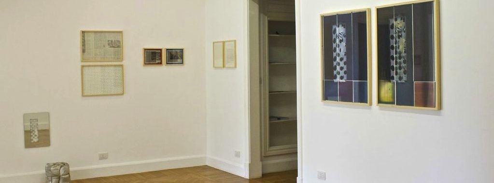
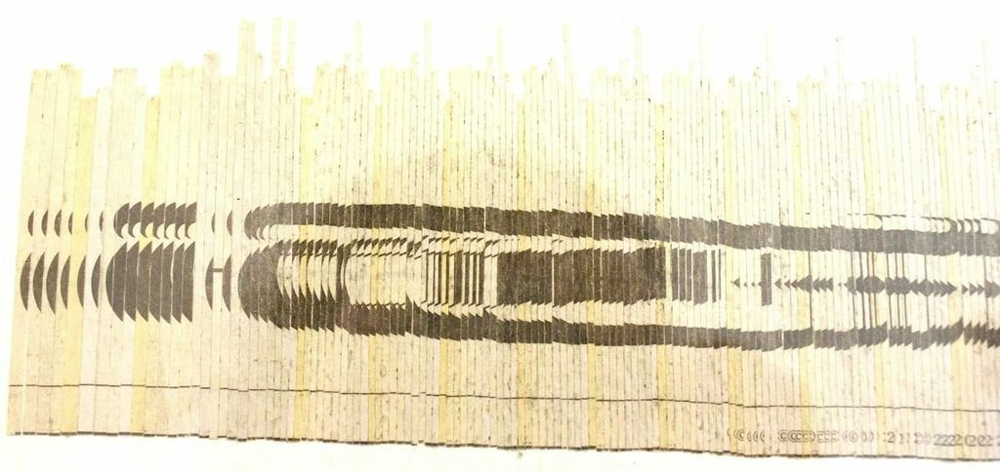
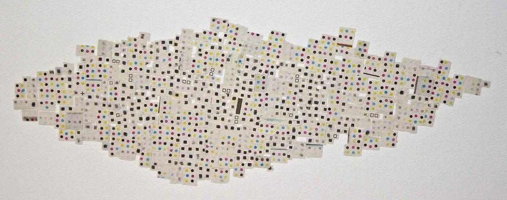
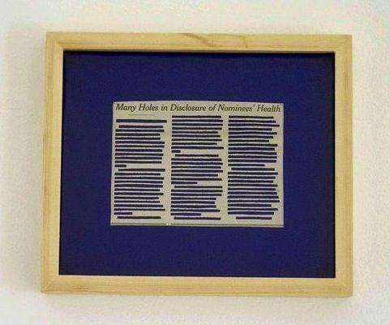
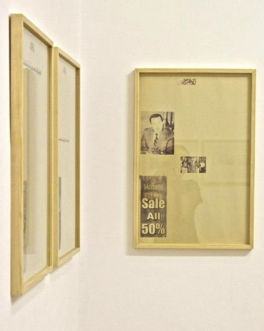
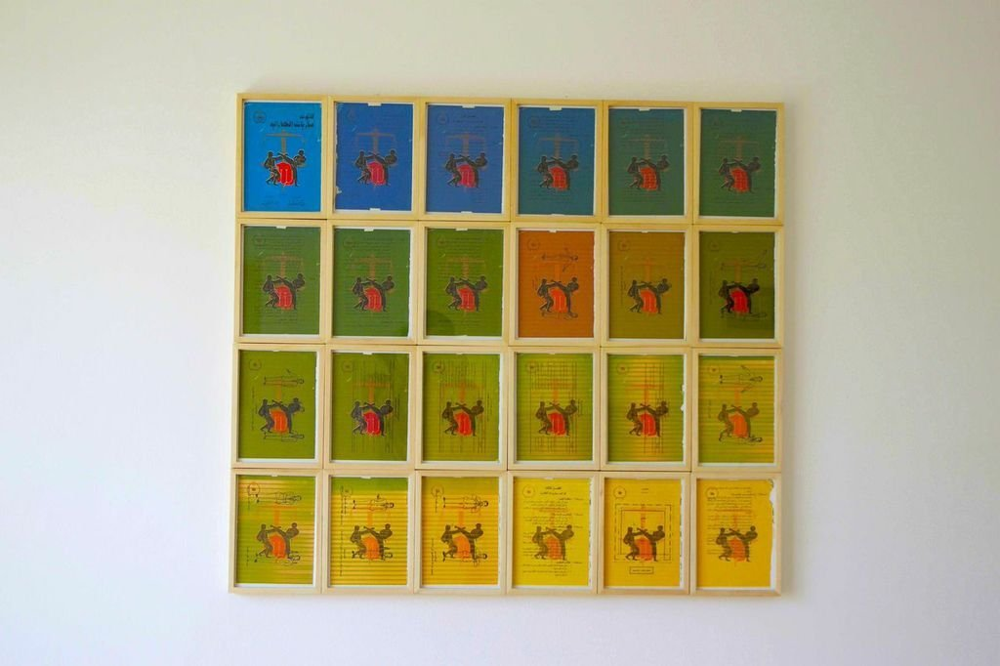

Originally published in Mada Masr on 22 June 2014
By Ismail Fayed

Image courtesy of Gypsum Gallery
Taha Belal's debut solo show at Gypsum Gallery feels more like a retrospective than a debut solo show. Many of the series presented, with their multiplicity of subject matter, media, style and format, could be singled out for individual exhibitions.
Belal's preoccupation with the multiple ways in which everyday paper materials can be neatly and obsessively manipulated, sliced and rearranged affords different ways of looking at and relating to them. His creation of patterns and perspectives almost makes the work feel interactive, in that it gives the audience multiple possibilities for looking (up close or from a distance), positioning (changing angles), or even imagining patterns. One series of three newspaper clippings with the words hollowed out almost has a sonic quality, for example, a certain rhythm that is created by the absent, perforated text.
The works in the show can be divided thematically, and scattered around the gallery's two rooms are several series in which newspapers are the primary medium and subject. Newspaper as a pervasive quotidian material seems to be a recurring theme in the artist's earlier work.

All images are courtesy of Gypsum Gallery
On one wall is a series of six wooden frames that collectively hold the masthead of the New York Times, a work made in 2009. Upon closer inspection, each 35 by 43 cm frame contains very fine strips of newspaper, minutely cut and glued on top of each other, to finally give one part of the title. The deconstruction of the hegemonic New York Times into microscopic strips arranged in frames gives the same feeling of fragmentation and manipulation that news media does. Truth is neatly dissected and reconfigured, and for the non-discerning viewer, this can almost look seamless.
The possibilities of pixels are hinted at in another piece from 2009. In it, tiny newspaper clippings bearing round dots of various colors construct an amorphous shape, which by its very construction betrays a sense of cartographic logic. The scale of the squares, which are cut-outs of the CMYK tests made at the edge of newspaper pages, and their precise placement opens them up for re-imagining, for freeing them from the constraints of context or content.

All images are courtesy of Gypsum Gallery
Three small frames from the same year, each hung separately, contain three news articles with the main headline and almost all the text meticulously cut out, leaving tiny hollow rectangular shapes. In one placed on green film, only two letters, "a" and "h," and the punctuation are kept intact. Another is on blue. The bright monochrome background accentuates the hollow patterns. The remaining punctuation obscures the viewer's distinction between absence and presence, for it seems to preserve each text's rhythm, so if one looks long enough the varying lengths of the sentences almost recreates a rhythmic pattern that, if it cannot be read, can almost be heard.

All images are courtesy of Gypsum Gallery
In another play on how we "see" the news and how change in its materiality can affect our understanding of it, two identical neighboring 23 x 21 cm frames from 2010 contain handwritten texts, one in English, one in Arabic. They appear to be news copied from Al-Ahram and the BBC. From afar the handwriting is barely legible, but the fact that there are different languages for both texts creates an almost opposite topographic effect, as the different alphabets and handwriting, the rise and fall of the letters, and the direction of the text collectively create a different image surface, raising questions about how information translates across languages. The contrasting slants and patterns in the writing also creates a sense of conflict around authorship and style.
Belal extended his engagement with the news and newspaper from text to image. In one 2008 series, several newspaper images have been transferred, through careful scribbling on the back of them, to white paper. Each frame contains two images, right next to each other, with different levels of detail and a shifted perspective. There is one of a war zone, with a tank right in the middle, and people standing around it. The viewer cannot make out where or who the people in the images are. But the washed-out effect and the shift in the level of zoom problematizes memory and shows how banally easy it is to manipulate imagery to hide, conceal or even falsify information.
A work from the same series has two images from a football match, with the same washed-out effect and play on zoom. I'm not a serious football fan myself, but the suspended motion of the players and the shifting prescriptive gave me the feeling of tension and anticipation associated with the game, a feeling that can be so easily recalled without knowing the game or team playing.
One triptych deals with image placement. Three frames each contain a different front page of the state-owned Al-Ahram daily, completely emptied of content except the main headline and an advertisement on the side. One frame also contains two extra images (one of Hosni Mubarak, one of his son). All three date back to before the 2011 revolution and provoke a sense of incredulity at the degree of political corruption so blatantly displayed on the front page of the national newspaper. The political scourge is balanced by the commercial advertisement of famous brands (such as Lacoste) that seem out of place and yet perfectly attuned to the context at the same time.
Belal's more recent work has moved away from newspaper. The two largest frames in the exhibition each hold what looks like two posters of a box wrapped in polka-dot wrapping paper. Each poster has different colors and editing. Although both bear the same pattern, the simple modifications create entirely different visual experiences. It almost perplexes the viewer into thinking that maybe there is a missing detail or subtle difference that went unnoticed, that it's not just wrapping paper, as one's usual experience of it is as a mundane and rather clichéd visual material, not one with critical or creative potential.

All images are courtesy of Gypsum Gallery
Three mirrors, also from 2014, placed in three different spots, have their silver polish scratched out in squarish shapes, bordered by intricate figurative patterns, all revealing the white wall behind. Each is in fact an image of a box wrapped in wrapping paper, seen from a different angle. In some areas the scratched polish leaves very fine traces, like sliver filaments rippling across the cleared surface. I could almost imagine the screeching sound of the polish being scraped and the slow fastidious movement required. If one stands in front of the mirrors, between the scratched out shapes one's own reflection has a keen sense of fragility and etherealness.
Wrapping paper was also evident in two huge gypsum boards, one for each room, which like the mirrors have been scraped at to create an embossed quality. The word "welcome" floats at the sides of the one in the main room. The other board, a fragment, shows the polka dot pattern from the posters, and the scraped area is filled in with shiny gold leaf. The boards, with their scale and roughness, also question what happens when the materiality of content is altered. What possibilities are there to see differently, and what remains when this shift takes place?
Finally, a large block of small touching frames made this year dominates one wall. It is a collage of pages from a manual for martial arts in Arabic, with the motif of the front cover — two men executing some kind of leg kick — reprinted over every page with the background color and texts changing from one page to the next. Such manuals were famous in pre-internet times, and aside from having a nostalgic appeal they also have a marked kitsch value. By using the text as a backdrop, manipulating the color and repeating the motif, Belal flattens the immediate visual response for the sake of the pictographic.

All images are courtesy of Gypsum Gallery
The more recent works – with the wrapping paper, mirrors, and book covers – seem to be moving away from the tight, microscopic work with the newspaper to something more abstract, bolder and more brightly colored, while maintaining Belal's play on abstraction, deconstruction, form and content with obsessive meticulousness. Such forays into experiments with composition can sometimes slip into works that are technical, derivative or cold, but this is not the case in any of these works, which have a sense of humor and a rich visual language, and are animated by a sensibility for the fragile and beautiful.
Taha Belal's "Vacuum Formed" ran at Gypsum Gallery till July 10, 2014.